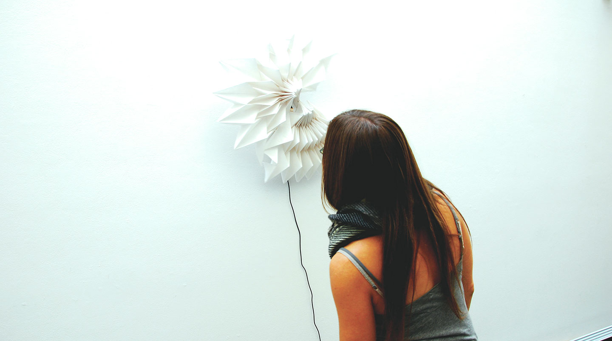
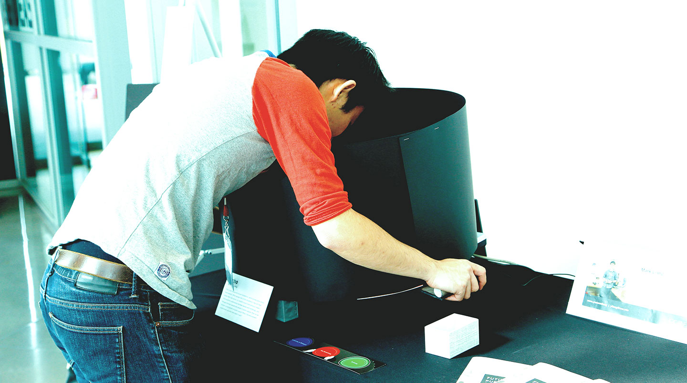

-

Flora is a responsive art installation that intervene in a transitional space to change people’s behavior in their daily activities. (https://vimeo.com/78400288)

Chrono is a kinetic sculpture that changes through time and senses people’s presence. (https://vimeo.com/79859855)

Flow is a light installation using the movement of people to light up space. (https://vimeo.com/81576312)

Orchestra is an interactive interface using hand gestures to activate different parts of the installation. (https://vimeo.com/90944572)

Segue is an interactive sound installation where people can experience the difference between two campuses through both visual and sound. (https://vimeo.com/90802615)
- 
Echo is an interactive sound installation that echoes voices from viewers. (https://vimeo.com/90802641)